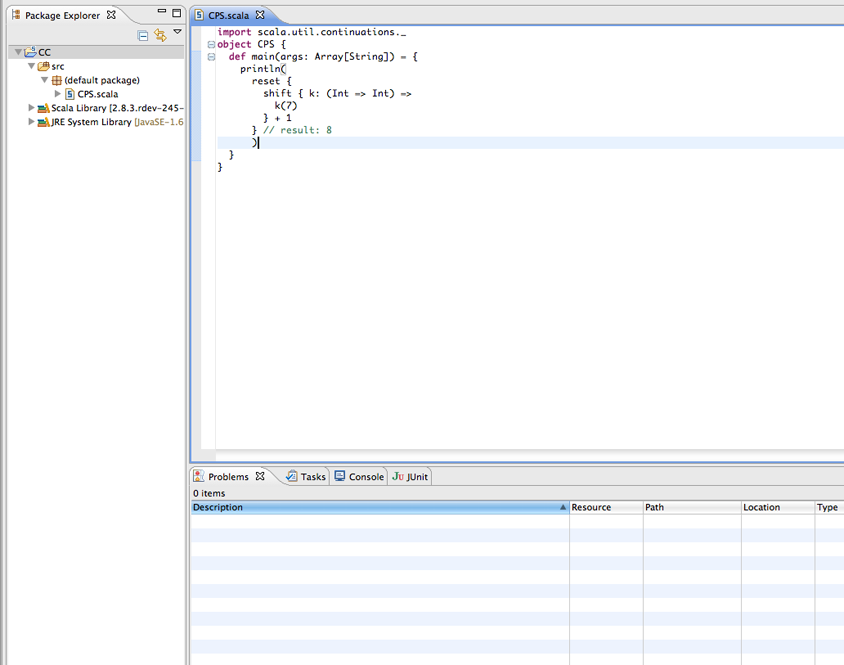

Enabling Scala continuations plugin in the Scala IDE
Prerequisites
Eclipse 3.6 (Helios) with a Scala IDE 2.0 installed, or Eclipse 3.7 (Indigo) with a Scala IDE Helium nightly installed.
Check the getting started page for instructions on how to install Scala IDE.
A basic knowledge of the Eclipse user interface is required.
No knowledge of the Scala language is required (in this guide).
Introduction
In this tutorial you will learn how to enable continuations in the Scala IDE. Scala provides support for continuation-passing style through a compiler plugin, which is shipped together with the main Scala distribution.
Enabling continuations in Scala 2.9 is really simple, you only need to pass -P:continuations:enable to the Scala compiler, and the continuations plugin will be loaded and used to compile your sources.
Note that in Scala 2.10 (trunk) the continuations plugin is enabled by default. Meaning that no configuration is needed to use continuations in the Scala IDE with Scala 2.10!
In this tutorial we will learn how to enable the continuations plugin with the Scala IDE for Scala 2.9.
Enabling continuations plugin
Assume you have a source file requiring the continuations plugin to be enabled. Chances are that in the Problems view you will get an error message such as: this code must be compiled with the Scala continuations plugin enabled.
Let’s fix this! Right click on your project folder and select Properties.
Then, under Scala Compiler, click on Use Project Settings.

Now, write continuations:enable in the P field.

Apply then Ok to close the properties window. The errors should go away (if that is not the case, rebuild your sources).
That’s it! You have successfully enabled continuations in your project.
Known Problems
Unfortunately, we found out that plugin settings in the Scala IDE 2.0.0 are not always correctly handled. The good news is that the issue has been fixed, and the patch is already available in both the Scala IDE 2.0.x nightly and the Scala IDE Helium nightly.
If you are using the Scala IDE 2.0.0 and the above step-by-step description does not work in your case, we suggest you to do the following:
Pass to -Xplugin the path to the continuations.jar.
- Important: Make sure that the path contains no whitespaces.
Pass continuations:enable to the P compiler setting.
But the best suggestion we have is to use the Scala IDE 2.0.x nightly, if you can do so.
Feedback
This guide is managed through in the Scala IDE documentation project on github. Please use github tickets and pull requests system for feedback.
Mirco Dotta - @mircodotta

{kind=link}
{kind=link}
{kind=link}